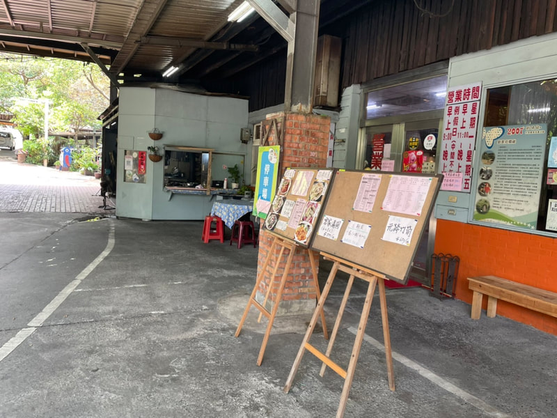

尋著柴火香氣，踏上九芎湖的尋味之旅
新竹縣新埔鎮照門里九芎湖六鄰十六之二號
為了讓您有最舒適的用餐體驗，建議您開車前往，沿途可欣賞九芎湖的自然風光。
由竹北交流道下，沿竹北市光明六路前行，右轉縣政二路。接 118 縣道往新埔方向，於 13.4 公里處左轉，接 115 縣道往九芎湖方向行駛，最後轉入竹 15 線即可抵達。
由關西交流道下，接 118 縣道往新埔方向行駛。接著轉入 115 縣道往九芎湖方向，約於 26.5 至 28.2 公里處左轉進入竹 15 線（九芎湖休閒農業區）即可抵達。
本店備有寬敞的專屬戶外停車場，車位充足，讓您與家人朋友能安心停車、輕鬆用餐。